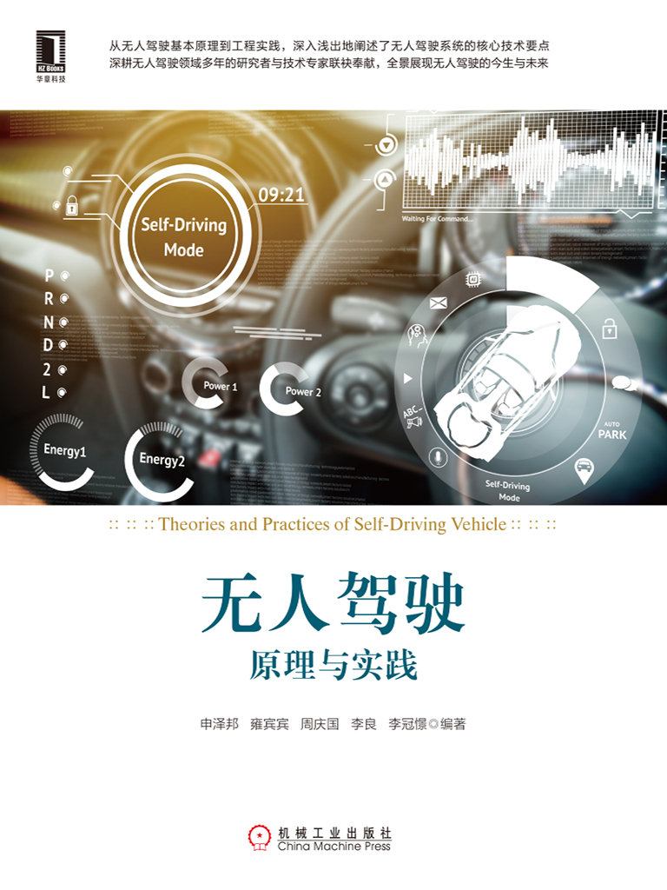

无人驾驶原理与实践
申泽邦 等编著
ISBN：978-7-111-61499-9
本书纸版由机械工业出版社于2019年出版，电子版由华章分社（北京华章图文信息有限公司，北京奥维博世图书发行有限公司）全球范围内制作与发行。
版权所有，侵权必究
客服热线：+ 86-10-68995265
客服信箱：service@bbbvip.com
官方网址：www.hzmedia.com.cn
新浪微博 @华章数媒
微信公众号 华章电子书（微信号：hzebook）
本书赞誉
近两年来，自动驾驶技术随着人工智能和汽车行业的飞速发展，逐渐成为业界焦点。自动驾驶技术是传统汽车产业与人工智能、物联网技术、高性能计算芯片等新兴科技深度融合的产物，其本质是汽车产业的升级。本书从自动驾驶的基本原理入手，到技术工程实践，深入浅出地阐述了自动驾驶系统级的核心技术要点，是学习、掌握自动驾驶技术不可多得的一本好书，推荐阅读。
小鹏汽车，自动驾驶部门副总监 肖志光
无人驾驶汽车是当下最热门的科技话题之一，热到似乎明年、下个月、明天我们就可以开上无人驾驶汽车，似乎我们许多人还没来得及成为一个司机，许多老司机就要被机器人抢走了工作。而事实上，又有多少人真正了解无人驾驶技术，了解它的分级、技术实现路径、技术成熟时间点。本书是一本非常好的技术入门读物，对于所有想了解自动驾驶技术，未来想从事自动驾驶相关工作的人来说，这都是一份很好的学习资料。
小鹏汽车，产品部副总裁 纪宇
本书理论和实践相结合，涵盖了无人/自动驾驶常用的内容与方向，丰富、翔实、分析透彻，可读性极强，是国内非常难得的一本中文无人驾驶系统性学习资料。
小鹏汽车，AI首席科学家 郭彦东
本书是自动驾驶专家的力作，强力推荐。
景驰科技，CEO 韩旭
无人驾驶作为改变人类出行方式的科技，逐渐成为新的风口。本书涵盖了无人驾驶技术的主要技术领域，并按照难易程度重新排序，由易到难循序渐进，很适合对自动驾驶技术感兴趣的读者阅读。
景驰科技，运营总监 陈云峰
无人驾驶无疑会是人类生活方式的重大变革，想要一窥行业究竟，不妨跟本书作者一起以通俗易懂的方式探索无人驾驶技术的当下与未来。
Kneron Inc，CEO 刘峻诚
With the development of sensor and AI technologies，autonomous driving is becoming a reality.Through integration and cooperation with the Internet of Things，autonomous vehicle will profoundly change our society in the near future.This book systematically introduces the key technologies of L4 autonomous driving.Focusing on both algorithm principles and practical applications，this book is a good choice for readers to quickly enter into this industry.
Autoware，Tier IV，Inc，President&CEO 武田一哉
50多年前的Apollo登月计划，人类踏出了探索未知月球的第一步。在未知前，人们无所畏惧，勇于探索，就如同今日在自动驾驶领域里，越来越多的科学家、工程师在探索着如何将人工智能、大数据、高性能计算芯片等先进技术，与传统的汽车行业进行深度融合，在进一步提升驾驶安全的前提下，解放人类的双手，让人类可以在运筹帷幄的同时仰望星空。本书作者在自动驾驶领域从事前瞻性的研究工作，不断累积、消化和整理经验与知识，并且出繁入简、深入浅出地将研究成果分享给各位有志于在自动驾驶领域不断探索的伙伴。自动驾驶技术依然挑战重重，但是未来却一片光明，与大家共勉，推荐阅读。
百度美国研究院，Apollo平台资深架构师 缪景皓
本书深入浅出地介绍了整个无人驾驶软件系统的基本原理和关键算法，并且带有大量实战用例，是无人驾驶的入门首选。
IEEE Fellow，圣塔克拉拉大学教授 林楠
这是我看过最系统、最全面，同时兼具实践案例的无人驾驶技术入门好书，强烈推荐给每位有志于投身无人驾驶产业的工程师。
Pix Moving无人驾驶，CEO 喻川
无人驾驶是当前汽车工业的重要发展方向，而当前无人驾驶技术的入门门槛颇高，本书大大降低了读者开展无人驾驶研究和学习的成本，是一本“接地气”的无人驾驶技术书。
国家千人计划专家，神目科技，董事长 刘靖峰
序
近年来，随着人工智能技术（尤其是深度神经网络）的发展，无人驾驶系统中的感知和综合决策等问题正在逐步得到解决。神经网络算法能够识别出物体的属性，并且能够在综合感知信息和定位结果之后做出类似于人类驾驶员的合理决策，这表明无人驾驶正在向我们走来。虽然通用人工智能仍然“遥远”，但可以预言，无人驾驶汽车将在不久的将来得到普及，而基于无人驾驶技术的世界也给了我们无限的想象空间。
我国无人驾驶汽车的研究起步较晚，关键理论研究薄弱，特别是相关专业人才比较欠缺。要加快国内无人驾驶的发展，就必须重视无人驾驶相关专业人才的培养。目前，国内无人驾驶相关的教程和书籍也比较欠缺，为了给广大初学者提供一本高质量的无人驾驶主题书籍，本书主要作者与国内一线无人驾驶科研团队负责人、一线新能源汽车厂商无人驾驶技术专家合作，共同编写了这本无人驾驶技术教材。本书有以下特点：
1）自成体系。本书的内容覆盖无人驾驶技术中的感知、规划和控制三大模块，对无人驾驶的整个技术栈进行了全面深入的介绍。
2）内容充实。本书既包括相关原理的讲解，又包括相应的实践代码。
3）适应面广。本书适用于希望进入无人驾驶汽车行业的技术人员和高校学生，既可作为入门书籍，也可作为无人驾驶应用研究的工具书籍。
本书的主要作者来自兰州大学未来计算研究院，所在团队的主要研究方向为深度学习、计算机视觉和自动驾驶技术。特别是团队成员申泽邦于2018年5月参加“快·开”全球无人驾驶挑战赛，获得全尺寸组第一名的成绩。该团队于2017年正式开始研究无人驾驶，是甘肃省第一个无人驾驶科研机构和创业团队，致力于推动西北地区无人驾驶学科和产业的发展。该团队在不到两年的时间完成了“从0到1”的突破，目前已经发展为以激光雷达、摄像头等多传感器融合和感知算法为特长，具备园区内L4级别无人驾驶系统研发能力的研究团队。同时国内一线无人驾驶科研团队负责人、一线新能源汽车厂商无人驾驶技术专家也为本书提供了相关的内容和技术支持，使得本书具有非常完善的知识结构。
潘毅
美国佐治亚州立大学计算机系校董教授，系主任
前言
随着近年来机器学习和强化学习理论的发展，众多研究领域和产业掀起了一场人工智能变革。其中，无人驾驶技术深受深度学习和计算机视觉发展的影响，其理论已经日趋成熟，正在向产业化落地迈进。
无人驾驶已经不再遥远。2017年4月，工业和信息化部、国家发展和改革委员会、科技部在印发的《汽车产业中长期发展规划》中提出：到2020年，汽车DA（驾驶辅助）、PA（部分自动驾驶）、CA（有条件自动驾驶）系统新车装配率超过50%，网联式驾驶辅助系统装配率达到10%，满足智慧交通城市建设需求。到2025年，汽车DA、PA、CA新车装配率达到80%，其中PA、CA级新车装配率达到25%，高度和完全自动驾驶汽车开始进入市场。
依托长期以来的技术积累和近期人工智能领域的突破，加之日趋成熟的政策，无人驾驶正在向人们走来。各大互联网公司和汽车巨头大量投入资源发展无人驾驶技术的事实表明，无人驾驶已经逐步成为信息产业和汽车行业的大势所趋。
与当前国内无人驾驶领域快速增长形成鲜明对比的是国内相关专业人才的欠缺，无人驾驶领域的顶尖人才仍然集中于欧洲、美国、日本等发达国家和地区。早在十几年前，美国国防部就举办了DARPA Grand Challenge无人驾驶挑战赛，当今全球最顶尖的无人驾驶团队和技术领袖多数是在该赛事中成名的。该比赛也催生了大量无人驾驶关键算法、无人驾驶系统设计理念等，可谓是现代无人驾驶的重要里程碑。相比之下，我国全自动无人驾驶汽车的研究起步晚，关键理论薄弱，专业人才欠缺。因此，要保持国内无人驾驶发展的后劲，就必须重视无人驾驶相关专业人才的培养。
本书即在此大背景下产生。无人驾驶是一个综合了多个学科的应用领域，这些学科包括机器人学、自动化控制、机器学习、机器视觉、移动通信、智能交通、车辆工程等。也正是由于无人驾驶的综合性，目前国内系统介绍无人驾驶的技术书籍相当匮乏。市面上现有的无人驾驶技术中文书籍多为科普类，读者很难通过其真正完成无人驾驶相关技术的理论入门和实战训练。本书旨在通过相对完整的无人驾驶理论介绍和简单易上手的实例帮助读者实现技术入门，让读者对无人驾驶软件系统的整个技术栈有一定的了解。
本书作者包括国内一线无人驾驶科研团队负责人、一线新能源汽车厂商无人驾驶技术专家，他们对整个无人驾驶技术栈有着全面深入的研究，同时拥有丰富的工业应用实践经验。通过本书，读者将系统学习并实战无人驾驶软件系统的感知、规划和控制基础算法，掌握ROS编程，学习并实践多传感器融合方法，学习机器学习、深度学习和强化学习等人工智能方法在无人驾驶中的应用，还将初步了解更接近工业应用的复杂方法。
考虑到工业界多使用Python进行算法原型设计，使用C++进行产品实现，故本书的实践部分采用Python和C++两种编程语言。在阅读本书前，读者应当具备基础的Python或C++编程能力，并且掌握基本的线性代数和概率论等数学知识。
本书适用于希望进入无人驾驶汽车行业的技术人员和高校学生，可作为技术入门书籍，亦可作为无人驾驶应用研究的工具书籍。本书提供了ROS编程、点云匹配定位、基于卡尔曼滤波和扩展卡尔曼滤波的传感器融合、机器学习图像识别、深度学习目标检测、优化轨迹的动作规划算法、纯追踪算法等大量编程实例，方便读者实践。配套源代码可从华章官网下载。
本书从开始编写到出版历时近一年，在此感谢兰州大学未来计算研究院无人驾驶团队的王金强、肖子超、孙宇等人对内容的贡献，同时感谢黄航、漆昱涛等人对内容的审阅。限于作者的学识，加之编写经验不足，本书难免有疏漏之处，肯请各位同行和读者批评指正。
申泽邦 周庆国
2018年9月
教学建议[1]
说明：本书作为无人驾驶技术入门和实践教材及工具书，建议学生具备基础的编程能力，同时掌握概率论、线性代数的基本知识，建议面向高年级计算机、自动化等方向本科及硕士研究生。
[1]如采用本书作为高校相关专业无人驾驶课程的教材，可参考本建议安排授课内容。
第1章 初识无人驾驶系统
近两年来随着无人驾驶技术突飞猛进，各大整车企业、无人驾驶系统解决方案提供商（如百度阿波罗、景驰等）也在不断努力，以将无人驾驶技术向商业化落地推进。显然，无人驾驶技术已经不再是遥不可及的“未来技术”。无人驾驶技术范畴不仅仅涉及车辆控制、路径规划、感知融合等领域，还涉及人工智能、机器学习、深度学习、强化学习等前沿领域，无人驾驶在未来的5～10年里必将掀起一场新的技术和市场革命。
站在工程应用的角度，学习和实践无人驾驶系统中的各种基本算法是非常有必要的。本章为无人驾驶系统概述，主要介绍无人车以及无人驾驶系统的概念、无人驾驶技术的意义、无人驾驶技术的发展历程以及现代无人驾驶系统的体系结构。通过本书，读者会对当前流行的无人驾驶系统和算法体系等有一个清晰、完整的理解。
1.1 什么是无人驾驶
无人驾驶汽车（Self-Driving Car）也称为无人车、自动驾驶汽车，是指车辆能够依据自身对周围环境条件的感知、理解，自行进行运动控制，且能达到人类驾驶员驾驶水平。
无人驾驶系统包含的技术范畴很广，是一门交叉学科，包含多传感器融合技术、信号处理技术、通信技术、人工智能技术，计算机技术等。若用一句话来概述无人驾驶系统技术，即“通过多种车载传感器（如摄像头、激光雷达、毫米波雷达、GPS、惯性传感器等）来识别车辆所处的周边环境和状态，并根据所获得的环境信息（包括道路信息、交通信息、车辆位置和障碍物信息等）自主做出分析和判断，从而自主地控制车辆运动，最终实现无人驾驶”。
1.1.1 无人驾驶的分级标准
在车辆智能化的分级中，工业界目前有两套标准，一套是由美国交通部下属的国家高速公路安全管理局（National Highway Traffic Safety Administration，NHTSA）制定的，另一套是由国际汽车工程师协会（Society of Automotive Engineer，SAE）制定的。两者的L0、L1、L2的分类都是相同的，不同之处在于NHTSA的L4被SAE细分为L4和L5。考虑到国内多采用SAE标准，本书将采用SAE标准介绍。图1-1是SAE的分级标准［1］。
图1-1 SAE无人驾驶系统分级机制
其中，L0级即完全由人类驾驶员驾驶车辆。
L1又称为辅助驾驶，增加了预警提示类的ADAS功能，包括车道偏离预警（Lane Departure Warning，LDW）、前撞预警（Forward Collision Warning，FCW）、盲点检测（Blind Spot Detection，BSD）预警等，主要是预警提示，并无主动干预功能。
L2称为半自动驾驶或者部分自动驾驶，这类系统已经具备了干预辅助类的ADAS功能，包括自适应巡航控制（Adaptive Cruise Control，ACC）、紧急自动刹车（Autonomous Emergency Braking，AEB）、车道保持辅助（Lane Keeping Assist，LKA）等，这个等级的车辆已经实现在高速公路上自主加速，或在紧急时刻自主刹车等功能，能达到进行简单的自动控制操作的程度。
从L2到L3，无人驾驶系统的能力发生了本质的改变，L2及以下还是由人来监控驾驶环境，并且需要人来直接进行车辆控制；而L3级被称为自动驾驶，这个等级下的无人驾驶系统已经具备了综合干预辅助类功能，包括自动加速、自动刹车、自动转向等，处于L3级的车辆系统已经能够依靠自身传感器来感知周围驾驶环境，但是监控任务仍然需要人类驾驶员来主导，在紧急情况下仍然需要人类驾驶员进行干预。
L4又称为高度自动驾驶，是指在限定区域或限定环境下（如固定园区、封闭、半封闭高速公路等环境下），可以实现由车辆完全感知环境，并在紧急情况下进行自主干预，无须人类驾驶员进行任何干预动作。在L4级中，车辆可以没有方向盘、油门、刹车踏板，但其只能限定在特殊场景和环境下应用。L4和L3的最主要区别在于是否仍然需要人类干预，L4的无人车能够在紧急情况下自行解决问题，而L3的无人车在此情况下则需要人类驾驶员的介入。
L5即全自动驾驶，L5不需要驾驶员，也不需要任何人来干预方向盘和油门、刹车等，也不局限于特定场景的驾驶，可以适应任意场景和环境下的自动驾驶。
目前大多数无人驾驶创业公司、整车厂等仍然处于L2到L4级别无人驾驶技术阶段，即无人驾驶原型车仅能够在特定的限制区域（如封闭或半封闭园区内、路况非常良好的部分高速路段等）测试，并且需要车上安全员随时进行介入。很多互联网公司（如百度、Waymo、Uber、景驰、小马等）均在测试和研发L4级别的无人驾驶系统，但是在本书撰写之时，L4级无人驾驶仍然还有大量的实际问题需要解决，包括技术、成本、量产、法律法规、市场等。一些公司宣称已经实现了在特定园区内的L4无人驾驶，这其实是带有一定迷惑性的，一方面，这些固定园区的场景规模一般较小，场景简单，不会覆盖到红绿灯、各种复杂标志标线、大量行人穿过马路等现实的复杂场景，仅仅能够在园区进行无人驾驶的demo并没有达到真正的L4水准；另一方面，就无人驾驶的区域而言，显然开放、复杂路段的无人驾驶要比封闭、半封闭环境下的无人驾驶复杂得多，无人驾驶技术存在一种“长尾效应”，即最后5%需要解决的技术问题可能需要花费95%以上的精力；再者，目前L4级无人驾驶技术主要基于高精度地图（HD Map）实现，构建高精度地图需要较高成本，并且可适用范围有限，即在没有绘制高精度地图或地图基本元素变化很大的地方，无人驾驶系统几乎完全不能运行，这也是为什么当前无人驾驶初创公司展示的案例多为精心设计的场地演示，而非在普通公共道路上的真实实际应用。这也引出了我们马上要展开的一个话题——实现真实公共道路的无人驾驶技术到底有多困难？
1.1.2 无人驾驶到底有多难
在讨论运行在公共道路上可靠的无人驾驶系统的实现有多困难之前，我们先来看一幅公共道路的交通状况图，图1-2是比较常见的路况。
图1-2 某交通路况
在这种路况下没有清晰的道路线，路人、自行车、三轮车、动物甚至是马车均为道路交通的参与者，这个例子看起来似乎比较极端，但是这种路况在发展中国家是普遍存在的，中国的城市公共道路设施（道路线、交通标识、红绿灯）虽然相对完善，但是在诸如乡村、县城等区域，交通的参与者种类也会很多而且情况复杂，每个个体的行为都难以预估。对于这类复杂的交通场景，任何一个训练有素的、清醒的人类驾驶员都能够轻松解决这些问题并且顺利完成驾驶任务。但是对于无人驾驶系统而言，要处理这类场景就现阶段而言非常困难，这些复杂、变化多端的交通状况是实现全自动驾驶之路的最大障碍之一。
无人驾驶的第二个难点则是由人类的法规和制度带来的。道路交通在不同的国家和地区呈现出各种各样的状态，如英国的驾驶习惯是左侧行驶，而中国的驾驶习惯是右侧行驶。并且，不同国家都有不同类型、符号的交通信号标志，其表示的含义也大为不同。这也就意味着，并不存在全球通用的无人驾驶系统，不同国家的道路法规、习俗都不尽相同，因此，无人驾驶系统也需要做“本地化”，如果全球通用，那么这个技术的成本、系统复杂性可谓是相当高了，也不现实。
第三个障碍则来源于人们对于机器的“高期望”。人类能够容忍自身犯错，但是对于机器犯错容忍度却极低，而在第一点提到的复杂多变的驾驶场景下，无人车难免会犯错，比如在光线条件非常差的情况下识别不出路人，或者高精度地图里没有包含刚刚施工完成（但确实已经通车）的路段等，事实是当前的技术和算法（无论是机器人学科的理论还是人工智能方向的方法）都还远远无法满足大众对于无人车的高期望。
第四个障碍来源于无人车的成本。经过百余年的发展，汽车工业已经将传统汽车的成本压缩到了极致，人们只需要几万元就能获得一辆汽车以及各种配置。但是无人驾驶系统为汽车引入了一笔不小的额外成本，其中包括各种新的传感器设备、计算设备、软件研发成本等，以目前在无人车的感知中应用最广泛的激光雷达为例，满足L4级别的激光雷达售价普遍在10万美元以上，仅仅这些传感器的硬件成本就已经远远超出了绝大多数车辆自身的价格了，而如何降低成本实现量产也是目前推动无人车商业化落地的一个重要研究课题。
当然，在无人驾驶技术的道路上障碍还有很多。例如，无人驾驶法规急需完善、高昂的研发投入、安全性问题、复杂场景的感知、人工智能技术难题、量产规模等。无人驾驶技术在当前仍然充满挑战，换句话说，我们在无人驾驶领域仍然还有大量的技术研究工作要做，对于希望进入无人驾驶领域的读者而言，仍然有巨大的可以有所作为的空间。
1.2 为什么需要无人驾驶
无人驾驶技术之所以能够带来社会变革，其根本原因在于高度的无人驾驶能够从根本上改变人们的出行方式和生活方式，使人们的出行、生活方式更加智能化。研究表明，无人驾驶技术能够提高道路交通安全，以及缓解城市交通拥堵问题，随着无人驾驶技术在各个领域的应用，还将催生出一批新的产业链，创造大量的就业机会。
1.2.1 提高道路交通安全
2015年，全美约有35 092人死于车祸［2］，而在中国大约为26万人。我们以驾驶人口比例来估算的话，平均每行驶14 000多万千米就会发生一次事故死亡事件，人类驾驶员在一年发生车祸并死亡的平均概率为0.011%，在一生中发生车祸并死亡的平均概率为0.88%。同时，每年约有260万人在道路交通事故中受伤。这也涉及数十亿美元的汽车修理费（仅限于免赔额）。如果我们能够减少25%的事故发生，将为社会节省一大笔费用开支。
引发道路交通事故的四大原因如下：
·驾驶员分心，注意力不集中。
·超速。
·酒后驾驶。
·鲁莽驾驶。
但对于无人车，则不会存在上述问题。无人驾驶系统不会分心，人类坐在无人车上不管是发短信还是吃东西都不会影响车辆行驶。无人车也不会因为乘客赶时间而超速驾驶，它会严格按照交通法规非常平顺合理地将乘客送至目的地。无人车不会饮酒，也没有兴趣在公路上莽撞行驶、开“斗气车”等。种种研究表明，高度的无人驾驶系统能够大大提高道路交通的安全性，减少道路交通事故的发生［5］。
1.2.2 缓解城市交通拥堵
交通拥堵几乎是所有大城市面临的问题，无人驾驶汽车的广泛使用将在很大程度上缓解城市交通拥堵问题，因为它能完全克服人为因素，使得城市交通运行效率最高。在大数据分析调度下，未来无人驾驶能够做到：
·快速了解拥堵情况，及时调整线路。
·避免大量人为因素如加塞等导致的不合理拥堵。
·潮汐公路的动态分段使用。
当然，对交通拥堵的缓解还是要看其在不同场景下的具体应用。
举个例子，在堵车的情况下，很多时候会因为他人加塞导致道路更加拥堵，无人驾驶则不会莽撞加塞，而是会依据一定规则、顺序依次排队通过，这就可以大大减轻拥堵的程度，提高人们的出行效率。无人驾驶汽车还可以根据实时路况自动调整路线，在最短的时间内安全地把乘客送到目的地。数据表明，美国的平均通勤时间为50分钟，待自动驾驶普及后，人们将能空闲出大量额外时间来处理其他事情，而不是无奈地被堵在路上。
1.2.3 提升出行效率
对有人驾驶的出行服务运营，我们经常会遇到司机拒载、叫不到车、司机文明素质低等情况。而在无人驾驶的出行服务运营中，无人驾驶车辆不会发生拒载乘客的情况，只要有派单就按调度需要接送，也不会因为路程短而不愿意载客；另外，也会减少夜晚开车的安全事故发生，如减少疲劳驾驶、酒后驾驶、车辆抢劫等情况。在无人驾驶运营方面，除了补充能源的情况，车辆会24小时待命，无论老、弱、病、残、孕都可享受无人驾驶出行服务带来的安全和便利，因为不需要驾驶员，也会相应节省一大笔人力成本，进而摊薄出行费用，这些都可以极大地提升车辆运营的效率，进而提升人们的出行效率，改变人们的出行方式和生活方式。
1.2.4 降低驾驶者的门槛
以往申请驾驶证时，有关部门对驾驶者的年龄、身体状况等方面会有较为严格的要求。例如，低龄、超龄人士就不允许申请驾驶证，而身体有残障的人士则要进行多方面的评估。而无人驾驶汽车的出现让汽车驾驶申请门槛大为降低，在完全自动驾驶阶段甚至无须申请，这对驾驶技术不过关的人来说是个福音。无论是对交通管理部门的影响还是对汽车驾驶者的影响，无人驾驶汽车的意义都是巨大的。
当然，在当前的技术情况下，最初的无人驾驶技术很可能仍然需要车主具备必要的无人驾驶监管资格，从而确保在极端情况下的安全。随着技术的发展，我们相信无人驾驶会越来越成熟，越来越完善，最终实现全社会完全无人驾驶的终极目标，让传统出行变成一种新型服务或移动生活空间，而不是困难和不便。
1.3 无人驾驶系统的基本框架
无人驾驶系统的核心可以概述为三个部分：感知（Perception）、规划（Planning）和控制（Control），这三部分的交互及其与车辆传感器硬件、环境的交互如图1-3所示。
图1-3 无人驾驶系统的基本框架
由图1-3可知，无人驾驶软件系统实际上是一个分层的结构，感知、规划、控制模块各自发挥不同的作用并相互影响。下面详细了解这三层的功能。
感知是指无人驾驶系统从环境中收集信息并从中提取相关知识的能力。其中，环境感知（Environmental Perception）特指对于环境的场景理解能力，如障碍物的类型、道路标志及标线、行人车辆的检测、交通信号等数据的语义分类。定位（Localization）是对感知结果的后处理，通过定位功能从而帮助无人车了解其相对于所处环境的位置。
规划是指无人车为了到达某一目的地而做出决策和计划的过程。对于无人驾驶车辆而言，这个过程通常包括从起始地到达目的地，同时要避开障碍物，并且不断优化行车路线轨迹和行为，以保证乘车的安全舒适。规划层通常又被细分为任务规划（Mission Planning）、行为规划（Behavioral Planning）和动作规划（Motion Planning）三层［3］。
控制是指无人车精准地执行规划好的动作、路线的能力，及时地给予车辆执行机构合适的油门、方向、刹车信号等，以保障无人车能按预期行驶。
1.3.1 环境感知
为了确保无人车对环境的理解和把握，无人驾驶系统的环境感知部分通常需要获取大量的周围环境信息，具体来说包括行人、车辆的位置和速度，以及下一时刻可能的行为、可行驶的区域、对交通规则的理解等。无人车通常是通过融合激光雷达（Lidar）、摄像头（Camera）、毫米波雷达（Millimeter Wave Radar）等多种传感器的数据来获取这些信息的［4］，本节简要地介绍一下激光雷达和摄像头在无人驾驶感知系统中的应用。
激光雷达是一类使用激光束进行探测和测距的设备，如美国Velodyne公司的64线激光雷达，它每秒钟能够向外界发送数百万个激光脉冲，它的内部是机械式旋转结构。激光雷达能够实时地建立起周围环境的三维地图，通常来说，激光雷达以10Hz左右的频率对周围环境进行旋转扫描，其每一次扫描的结果为密集的点构成的三维图，每个点具备空间坐标（x，y，z）信息，由于其扫描结果都是激光点数据，并且数量巨大，所以又被称为点云数据，点云数据构建的图也叫点云图（Point Cloud Graph），图1-4是使用Velodyne VLP-32c型号的激光雷达绘制的一个点云地图。
图1-4 使用激光雷达绘制的点云地图
目前，激光雷达因其测量的高度可靠性、精确性，仍是无人驾驶系统中最重要的传感器之一。但是并不意味着在任意场景中激光雷达的表现都是完美的，如在开阔地带，由于缺乏特征点，会存在点云过于稀疏，甚至丢失点的问题；对于不规则的物体表面，使用激光雷达也比较难辨别其特征模式；在诸如大雨、大雾这类天气情况下，激光雷达的精度和准确度也会受到很大影响。
对于激光点云数据的处理，通常我们会进行两步操作：分割（Segmentation）和分类（Classification）。其中，分割是为了将点云图中离散的点使用聚类算法重新分组，使其聚合成一个个整体，而分类则是区分出这些整体属于哪一种类别，如属于行人类、车辆类或者其他障碍物类等。
在完成了对点云的目标分割以后，分割出来的目标还需要被正确地分类。在这个环节中可以借鉴机器学习的分类算法，如支持向量机（Support Vector Machine，SVM）、决策树、K均值（K-means）等算法，以对聚类的特征进行分类。最近几年由于深度学习的发展，业界开始使用卷积神经网络（Convolutional Neural Network，CNN）来对三维的点云聚类进行分类，然而，无论是基于提取特征的SVM方法还是基于原始点云的CNN方法，由于激光雷达点云本身解析度低，对于反射点稀疏的目标（比如行人、自行车等），基于点云的分类并不可靠，所以在实践中我们往往融合激光雷达和摄像头传感器，既利用摄像头的高分辨率来对目标进行分类，又利用激光雷达的可靠性对障碍物进行检测和测距，融合两者的优点最终完成环境感知。
在无人驾驶系统中，我们通常使用视觉传感器来完成对道路的检测，以及车辆、交通标志等的检测、识别和分类。道路的检测包含对车道线的检测（Lane Detection）、可行驶区域的检测（Drivable Area Detection）。检测任务还包括对其他车辆的检测（Vehicle Detection）、行人检测（Pedestrian Detection）、交通标志和信号的检测（Traffic Sign Detection）等，以及对所有交通参与者的检测、识别和分类。
车道线的检测涉及两个方面：第一是识别车道线，对于弯曲的车道线，能够计算其曲率，即弯曲的弧度，以决定方向盘的控制角度；第二是确定车辆自身相对于车道线的偏移（即无人车自身在车道线的哪个位置）。一种方法是提取一些车道的特征，包括边缘特征（如索贝尔算子，通常是通过求取边缘线的梯度，即边缘像素的变化率来检测车道线）、车道线的颜色特征等，然后再使用多项式拟合车道线的像素，最后基于多项式以及当前摄像头在车上挂载的位置，确定前方车道线的曲率和车辆相对于车道的偏离位置。
对于可行驶区域的检测，目前的一种做法是采用深度学习神经网络对场景进行像素分割，即通过训练一个像素级分类的深度神经网络，完成对图像中可行驶区域的分割。
1.3.2 定位
在无人车感知层面，定位的重要性不言而喻，无人车需要知道自己相对于外界环境的精确位置。在城市复杂道路行驶场景下，定位位置的精度要求误差不超过10cm，如果定位位置偏差过大，那么在城市道路行驶中，车辆轮胎就很容易在行驶过程中擦到路牙、剐蹭到护栏等，甚至会引发爆胎等车辆驾驶安全问题和交通安全事故。尽管在车辆自动驾驶中会利用自动避障功能以辅助安全，但也不能保证百分百地避障成功，并且对于路牙这种道路障碍特征，在某些情况下，由于盲区、软件故障等原因，传感器也不一定能保证百分百检测到。因此，在无人车技术的发展过程中，无论是从硬件层面还是软件层面，定位精度的提高都具有很重要的意义。
目前使用最广泛的无人车定位方法包括融合全球定位系统（Global Positioning System，GPS）和惯性导航系统（Inertial Navigation System，INS）的定位方法，其中，GPS的定位精度由器件成本决定，一般在几十米到几厘米级别之间，精度越高，GPS和惯性导航等传感器的价格也就相对越昂贵。融合GPS/INS的定位方法在GPS信号缺失、微弱的情况下，如地下停车场、密集高楼的市区等场景，也不容易做到高精度定位，因此也只能适用于部分场景（如开阔、信号良好环境下）的无人驾驶定位任务。
地图辅助类定位算法是另一类广泛使用的无人车定位算法，同步定位与地图构建（Simultaneous Localization And Mapping，SLAM）是这类算法的代表，SLAM的目标即构建地图的同时使用该地图进行定位，SLAM通过利用传感器（包括摄像头、激光雷达等）已经观测到的环境特征，确定当前车辆的位置以及当前观测目标的位置，这是一个利用以往的先验概率分布和当前的观测值来估计当前位置的过程，我们通常使用的方法包括贝叶斯滤波器（Bayesian Filter）、卡尔曼滤波器（Kalman Filter）、扩展卡尔曼滤波器（Extended Kalman Filter）以及粒子滤波器（Particle Filter）等，这些方法都是基于概率和统计原理的定位技术。
SLAM是机器人定位领域的研究热点，在特定场景下的低速自动驾驶定位的应用过程中也有较多现实的实例，如园区无人摆渡车、无人清洁扫地车，甚至是扫地机器人、Boston Dynamics制造的机械大狗等场景，都广泛使用了SLAM技术。实际上，在此类特殊场景的应用中，我们并不是在定位的同时实时建图，而是事先使用传感器如激光雷达、视觉摄像头等对运行环境区域进行了SLAM地图的构建，然后在构建好的SLAM地图的基础上实现定位、路径规划等其他进一步的操作。
在有了一部分点云地图之后，还可以通过程序和人工处理的方法将一些“语义”元素添加到地图中（如车道线的标注、交通信号标志标线、红绿灯位置、当前路段的交通规则等），这个包含了语义元素的地图就是我们无人驾驶领域常说的“高精度地图”。在实际定位的时候，使用3D激光雷达的扫描数据和事先构建的高精度地图进行点云匹配，以确定无人车在地图中具体位置的这类方法被统称为扫描匹配（Scan Matching）方法，其中最常见的方法是迭代最近点（Iterative Closest Point，ICP），该方法基于当前扫描和目标扫描的距离度量来完成点云配准。除此以外，正态分布变换（Normal Distributions Transform，NDT）也是进行点云配准的常用方法，它是基于点云特征直方图来实现配准的一种算法。基于点云配准的定位方法也能实现10cm以内的定位精度，本书后文将会讲解基于正态分布变换的点云定位方法。
虽然点云配准能够给出较高精度的无人车相对于地图的全局定位，但是这类方法过于依赖事先构建好的高精度地图。另外，由于高精度地图构建成本较高，并且点云匹配计算开销也非常大（例如Velodyne-32c每秒产生高达120万个点数据），以及车辆在高速行驶的过程中对计算、控制的实时性要求较高，因此，在高速行驶无人驾驶场景中使用点云匹配的方法相对来说成本过高。
1.3.3 任务规划
无人驾驶规划系统的分层结构设计源于美国2007年举办的DAPRA城市挑战赛，从参赛队伍已发表的论文来看，在比赛中多数参赛队都将无人车的规划模块分为三层结构设计：任务规划、行为规划和动作规划。其中，任务规划通常也被称为路径规划或者路由规划（Route Planning），其对应着相对顶层、全局的路径规划，如起点到终点的路径选择。
我们也可以把道路系统简化成有向图网络（Directed Graph Network），这个有向图网络能够表示道路和道路之间的连接情况、通行规则、道路的路宽等各种信息，其本质上就是前面提到的高精度地图的“语义”部分，这个有向图网络也被称为路网图（Route Network Graph），如图1-5所示。
图1-5 一个简单的路网图
上述路网图中的每一条有向边都是带权重的，因此，无人车的路径规划问题就转化为在路网图中，为了让车辆达到某个目标地（通常来说是从A地到B地），基于某种方法选取最优（即代价最小）路径的过程，那么规划问题就演变成了一个有向图搜索问题。传统的算法如迪可斯特朗算法（Dijkstra’s Algorithm）、A*算法（A*Algorithm）、D*等算法，主要用于计算离散图的最优路径搜索，被广泛应用于搜索路网图中代价最小路径的场景中。
1.3.4 行为规划
行为规划有时也被称为决策制定（Decision Maker），其主要任务是根据任务规划的目标和对当前环境的感知（例如，其他车辆、行人的位置和行为，当前的交通规则等），做出下一步无人车需要执行的决策和动作，可以把这一层模块所起的作用理解为车辆驾驶员的决策系统，驾驶员根据目标和当前的交通情况决定是跟车还是超车、是停车等行人通过还是绕过行人等。
行为规划实现的一种方法是使用包含大量动作短语的复杂有限状态机（Finite State Machine，FSM）。有限状态机即从一个简单的起始状态出发，根据不同的驾驶场景跳转到不同的动作状态，同时将要执行的动作传递给下层的动作规划层。图1-6是一个简单的有限状态机。
图1-6 一个简单的有限状态机
如图1-6所示，每个状态都是对车辆动作的一个决策过程，状态和状态之间存在一些跳转条件，某些状态可以自循环（比如图中的循迹状态和等待状态）。虽然有限状态机（FSM）是目前无人车上采用的主流行为决策方法，但FSM仍然存在着很多局限性：
·首先，要实现复杂的行为决策，需要人工设计大量有效的状态。
·其次，车辆有可能会碰到有限状态机没有考虑过的状态，因此状态机的扩展也成为问题。
·另外，如果有限状态机没有设计死锁保护，车辆甚至可能陷入某种死锁状态［8］。
1.3.5 动作规划
通过规划一系列的执行动作以达到某种目的（例如避障）的处理过程被称为动作规划。通常来说，有两个指标可用来考量动作规划算法的性能：计算效率（Computational Efficiency）和完整性（Completeness）。所谓计算效率，即完成一次动作规划的计算处理效率，动作规划算法的计算效率在很大程度上取决于配置空间（Configuration Space）。如果一个动作规划算法能够在问题有解的情况下在有限时间内返回一个解，并且能够在无解的情况下返回无解，那么我们称该动作规划算法是完整的。
配置空间：一个定义了机器人所有可能配置的集合，它定义了机器人所能够运动的维度，对于最简单的二维离散问题，它的配置空间就是［x，y］，无人车的配置空间可以非常复杂，这取决于所使用的运动规划算法。
在引入了配置空间的概念以后，无人车的动作规划就变成了：在给定一个初始配置（Start Configuration）、一个目标配置（Goal Configuration）以及若干约束条件（Constraint）的情况下，在配置空间中找出一系列的动作以到达目标配置，这些动作的执行结果就是将无人车从初始配置转移至目标配置，同时满足约束条件。在无人车这个应用场景中，初始配置通常是无人车的当前状态（当前的位置、速度和角速度等），目标配置则来源于动作规划的上一层——行为规划层，而约束条件则是车辆的运动学限制（最大转角、最大加速度等）。
显然，若在高维度的配置空间中进行动作规划，其计算量是非常巨大的，为了确保规划算法的完整性，我们不得不搜索几乎所有可能路径，这就形成了连续动作规划中的“维度灾难”问题。目前动作规划中解决该问题的核心理念是将连续空间模型转换成离散模型，具体方法可以归纳为两类：组合规划（Combinatorial Planning）方法和基于采样的规划（Sampling-Based Planning）方法。
动作规划的组合方法通过连续的配置空间找到路径，而无须借助近似值。基于这个属性，它们可以被称为精确算法。组合方法通过对规划问题建立离散表示来找到完整的解，如在DARPA城市挑战赛中，CMU的无人车（BOSS）就使用了这类动作规划算法，其中，首先使用路径规划器生成备选的路径和目标点，如图1-7所示，然后通过优化算法选择最优的路径；另一种离散化的方法是网格分解方法（Grid Decomposition Approach），在将配置空间网格化以后，使用离散图搜索算法（如A*等）找到一条优化路径［7］。
图1-7 动作规划中的组合方法
基于采样的方法由于其概率完整性而被广泛使用，最常见的算法如PRM（Probabilistic Roadmap）、RRT（Rapidly-Exploring Random Tree）和FMT（Fast-Marching Tree）。在无人车的应用中，状态采样方法需要考虑两个状态的控制约束，同时还需要一个能够有效地查询采样状态和父状态是否可达的方法。后文我们将详细介绍基于Frenet坐标系的轨迹优化方法，它是一种基于采样的动作规划算法。
1.3.6 控制系统
作为无人车系统的最底层，控制系统层旨在将规划好的动作在车辆控制层面实现，所以控制模块的评价指标即为控制的精准度。控制系统内部会存在测量反馈，控制器通过比较车辆的测量和预期来输出相应的控制动作，这一过程称为反馈控制（Feedback Control）。
反馈控制被广泛地应用于自动化控制领域，其中最典型的反馈控制器当属PID控制器（Proportional-Integral-Derivative Controller），PID控制器的控制原理基于一个单纯的误差信号，这个误差信号由三项构成，即误差的比例（Proportion）、误差的积分（Integral）和误差的微分（Derivative）。PID控制器实现简单、性能稳定，因此目前仍然是工业界最广泛使用的控制器，但是作为纯反馈控制器，PID控制器在无人车控制中（特别是高速运动的过程中）存在一定的问题：PID控制器是单纯基于当前误差反馈的，由于制动机构的延迟性，在高速运动场景下会给控制本身带来非常大的延迟影响，而由于PID内部不存在系统模型，故其不能对延迟建模，为了解决这一问题，我们引入基于模型预测的控制方法。
模型预测控制（Model Predictive Control，MPC）是指借助车辆运动模型来预测未来一个时间段的运动，并通过不断优化控制参数来拟合这一系列运动的方法，通常模型预测的时间段较短［6］。模型预测控制由四部分组成，分别是：
·预测模型：基于当前的状态和控制输入来预测未来一段时间内状态的模型，在无人车系统中，通常是指车辆的运动学/动力学模型。
·反馈校正：对模型施加了反馈校正的过程，使预测控制具有很强的抗扰动和克服系统不确定性的能力。
·滚动优化：滚动地优化控制序列，以得到与参考轨迹最接近的预测序列。
·参考轨迹：即设定的轨迹。

图1-8 模型预测控制的基本结构
图1-8是模型预测控制（MPC）的基本结构图，由于模型预测控制基于运动模型进行优化，PID控制中的控制时延问题可以在建立模型时考虑进去，所以模型预测控制在无人车控制中具有较高的应用价值。
无人车控制的另外两个问题是轨迹生成（Trajectory Generation）和轨迹跟踪（Trajectory Tracking）。轨迹生成是指找到一组控制输入u（t），使得预期的输出结果为目标状态的轨迹x（t），其中，车辆的运动学/动力学约束是整个轨迹生成的约束条件，当一条轨迹x（t）不存在对应的控制输入u（t）使其能够满足车辆动力学约束时，我们称这个轨迹是不可达的。目前在无人车领域中使用的轨迹生成方法通常都是基于车辆动力学模型的。
轨迹跟踪主要分为两类方法：基于几何路径跟踪方法和基于模型的跟踪方法。基于模型的方法通常使用车辆的运动学和动力学模型来实现，其中，运动学模型在低速状态下效果好，而基于动力学模型的控制器在高速场景下跟踪效果更好，但是在较大加速度以及路径曲率过大的情况下效果一般。几何路径跟踪方法使用简单的几何关系来导出转向控制规则，这类方法利用前视距离（Look Ahead Distance）来测量车辆前方的误差，其复杂度也是从简单的圆弧计算到更复杂的几何定理，如向量跟踪法。
本书后文将介绍最常用的几何路径跟踪算法，如纯追踪（Pure Pursuit）算法。纯追踪算法的实现比较简单，是广泛使用的轨迹跟踪算法。纯追踪算法的输入是一系列路径点（Waypoint），它通过计算一条曲线来实现让车辆从当前位置移动到目标位置。纯追踪算法的关键在于选择路径中位于车辆前方一段距离（前视距离）的目标点，让车辆跟踪这个目标点，随着车辆自身的移动，前视目标点也随之移动，从而使得车辆沿着一系列轨迹点行驶，这种循迹的方法有点像人类驾驶员开车的场景，因为我们开车的时候也总是盯着道路前方一段距离来控制方向，从而让车到达前方的那个位置。
1.3.7 小结
本节概述了无人驾驶系统的基本框架，讲解了无人驾驶软件系统的三层结构：感知、规划和控制。从某种程度而言，无人车在这种分层体系下可以被看作一个“载人机器人”，通过感知环境、定位来执行一系列任务规划和控制运动。近年来由于深度学习的突破，使得基于图像的深度学习的感知技术在环境感知中也发挥了越来越重要的作用，借助人工智能，我们已经不再局限于感知障碍物，而逐渐变成理解障碍物是什么，以及理解场景甚至预测场景和目标的行为，关于机器学习和深度学习的内容将在第5章和第6章详细介绍。
在实际的无人车感知系统中，通常需要融合激光雷达、摄像头和毫米波雷达等多种测量数据，这里涉及列的卡尔曼滤波算法、扩展卡尔曼滤波算法等融合算法，以及激光雷达、摄像头的坐标转换概念，本书将在第4章中详细介绍。
无人车和机器人的定位方法众多，目前主流的方法之一是使用“GPS+惯性导航系统”的融合方法，二是基于Lidar（激光雷达）点云扫描匹配的方法，这些方法将在第3章中详细介绍。
规划模块内部也被分成三层：任务规划（也被称为路径规划）、行为规划和动作规划。本书将介绍基于离散路径搜索算法的任务规划方法。在行为规划中，我们将重点了解有限状态机（FSM）在行为决策中的应用。在动作规划算法层，将介绍基于Frenet坐标系的优化轨迹规划方法，这些方法将在第8章中详细介绍。
关于控制模块，无人驾驶系统往往会使用基于模型预测的控制方法，但是在了解模型预测控制算法之前，作为对基础反馈控制的了解，我们仍然会详细介绍PID控制器。我们会学习两个简单的车辆模型——运动学自行车模型和动力学自行车模型，控制模块的具体内容详见本书的第9章。
虽然将无人车理解为另一种意义上的机器人，使用机器人开发的思维处理无人车系统是目前工业界的普遍做法，但是也不乏一些单纯使用人工智能来完成无人驾驶技术的案例。其中基于深度学习的端到端（End to End）无人驾驶和基于强化学习的驾驶智能体是目前研究的热点，本书将在第7章和第10章详细介绍这两类方法。
1.4 开发环境配置
本书提供了大量可运行的代码，以供读者在理解概念后进行实际操作。这些代码的实现会依赖一定的环境，这里我们将指导安装运行代码所需的各种环境，推荐系统为Ubuntu-16.04。
1.4.1 简单环境安装
Ubuntu-16.04本身包含Python 2.7环境。为了方便读者理解，本书大量代码使用Python 2.7，少量代码采用C++。pip是一个现代的、通用的Python包管理工具，安装命令如下：
安装scipy和numpy：
使用pip安装本书代码涉及的包：
安装moviepy并且配置ffmpeg库：
安装matplotlib-2.0.2版本：
安装Keras-2.0.0版本
安装TensorFlow-1.6.0版本
这里的TensorFlow安装的是CPU版本，如果想要安装GPU版本的TensorFlow，可参考下面的链接：http://wiki.jikexueyuan.com/project/tensorflow-zh/get_started/os_setup.html。
1.4.2 ROS安装
由于系统是Ubuntu-16.04，所以我们要安装的ROS版本为Kinetic，具体的安装步骤如下。
第一步，安装源：
如果下载速度很慢，可以考虑更换其他源，源地址可参考链接：http://wiki.ros.org/ROS/Installation/UbuntuMirrors。
第二步，设置密钥：
第三步，更新：
第四步，安装ROS：
第五步，安装rosdep：
第六步，设置环境：
1.4.3 OpenCV安装
第一步，安装依赖环境：
第二步，到下载页面下载安装包，然后解压。官网链接为：https://opencv.org/。
第三步，源码安装。
·创建临时区域
·配置
·创建
·安装
1.5 本章参考文献
［1］Taxonomy and Definitions for Terms Related to On-Road Motor Vehicle Automated Driving Systems［EB/OL］.https://www.sae.org/standards/content/j3016_201401/.
［2］美国国家公路交通安全局.TRAFFIC SAFETY FACTS 2015［R］.2015.
［3］Pendleton S，Andersen H，Du X，et al.Perception，Planning，Control，and Coordination for Autonomous Vehicles［J］.Machines，2017，5（1）：6.
［4］王世峰，戴祥，徐宁，等.无人驾驶汽车环境感知技术综述［J］.长春理工大学学报（自然科学版），2017，40（1）：1-6.
［5］潘福全，亓荣杰，张璇，等.无人驾驶汽车研究综述与发展展望［J］.科技创新与应用，2017（2）：27-28.
［6］Camacho D E F，Bordons D C.Model Predictive Control［M］.London：Springer，2007：575-615.
［7］Urmson C，Anhalt J，Bagnell D，et al.Autonomous Driving in Urban Environments：Boss and The Urban Challenge［J］.Journal of Field Robotics，2008，25（8）：425-466.
［8］Furda A，Vlacic L.Towards Increased Road Safety：Real-Time Decision Making for Driverless City Vehicles［C］.IEEE International Conference on Systems，Man and Cybernetics，2009：2421-2426.
第2章 ROS入门
ROS［1］（Robot Operating System）是目前最广泛使用的一种开源机器人软件平台，它的诞生极大地提升了机器人系统开发的效率［2］。目前，部分无人驾驶系统的软件实现仍然依赖于ROS平台。对于高速自动驾驶开发，ROS的实时性略显不足，但由于ROS具有强大的系统底层通信功能，以及来自世界各地的优秀工程师的共同维护，在无人驾驶底层系统的实现上，ROS仍然是开源框架中最好的选择，诸如百度Apollo、Autoware、Udacity等无人驾驶车辆原型都是基于ROS开发的。百度Apollo在ROS平台的基础上增加了实时性的框架，以满足高速自动驾驶实时控制的需求。同时，ROS2已经开始在积极探索和开发实时性系统通信功能，以进一步满足高速自动驾驶开发需求。
2.1 ROS简介
2.1.1 ROS是什么
ROS即机器人操作系统，包括［6］：
·通信平台：ROS提供了一种发布/订阅式的通信框架，用以简单、快速地构建分布式计算系统［3］。
·工具：ROS提供了大量可视化、调试等工具组合，用以配置、启动、自检、调试、可视化、仿真、登录、测试、终止分布式计算系统。
·能力：具有控制、规划、预测、定位操纵等功能。
·平台支持：ROS的发展依托于一个强大的社区。wiki.ros.org尤其关注ROS的兼容性和支持文档，它提供了一套“一站式”方案使得用户能够快速搜索并学习来自全球开发者数以千计的ROS程序包。
2.1.2 ROS的历史
ROS起源于2007年斯坦福大学人工智能实验室的STAIR项目与机器人技术公司Willow Garage的个人机器人项目（Personal Robots Program）之间的合作，2008年之后由Willow Garage来推动，如今已被许多学校、公司研发机构等使用，为机器人编程提供了快速方法和标准。
2.1.3 ROS的特性
ROS的特性如下：
·点对点设计：ROS的点对点设计，以及服务和节点管理器等机制，可以实现很好的分布式网络运算拓扑结构，能够适应多机器人遇到的挑战。
·分布式设计：程序可以在多台网络计算机中运行和通信。
·多语言：ROS现在支持多种语言，如C++、Python、Octave和LISP，也包含其他语言的多种接口实现。语言无关的消息处理让多种语言可以自由混合和匹配使用。
·轻量级：鼓励将所有驱动和算法逐渐发展成为与ROS没有依赖的单独的库。ROS建立的系统具有模块化的特点，各模块中的代码可以单独编译，而且编译使用的CMake工具使它很容易就实现精简的理念。
·免费且开源：大多数的ROS源代码都是公开发布的。
2.2 ROS的核心概念
需要理解的ROS核心概念包括［4］：
·Master（主节点）
·Node（节点）
·Topic（话题）
·Message（消息）
1.Master（主节点）
ROS Master用于管理各节点间的通信，它通过RPC［7］（Remote Procedure Call，远程过程调用）提供了节点的登记列表和对其他计算资源信息的查找。如果没有Master，其他节点通信时将无法找到与之交互的节点交换消息或调用服务。但有了Master，在某些方面又增加了系统的风险，如节点都通过Master来管理和调用服务，一旦Master崩溃，其他所有节点都会受到影响。因此，在ROS2版本中提出了一种新的消息通信架构——DDS［8］（Data Distribution Service），它用于解决此类问题，以及实现实时传输。启动Master的命令如下：
2.Node（节点）
节点又被称为“软件模块”，是一些独立编译、执行运算任务的进程。通常情况下，ROS利用规模可增长的方式使代码模块化：一个系统就是由很多节点组成的。我们使用“节点”使得基于ROS的系统在运行的时候更加形象化：当许多节点同时运行时，可以很方便地将点对点通信绘制成一个图表，在这个图表中，进程就是图中的节点，而点对点的连接关系就是其中的连接线。使用如下指令运行节点：
查看激活节点列表：
列出节点信息：
“杀死”指定运行节点：
在节点崩溃又不运行的情况下，使用此命令清除节点注册信息，可以清理节点运行环境：
列出运行在指定计算机上的节点信息，或者列出机名：
3.Topic（话题）
在ROS中，消息以发布/订阅的方式进行传递。一个节点可以在一个给定的主题中发布消息，另一个节点针对某个主题关注与订阅特定类型的数据，可能同时有多个节点发布或者订阅同一个主题的消息。总体上，发布者和订阅者不必了解彼此的存在。想象一下我们在论坛里发帖子，帖子的主题就是一个Topic，发帖人发帖后，每个参与讨论的人就是一个Node，所有的言论都发布在这个Topic之下。有的人发表一些言论，这就是Node发布一些Message到Topic上；有的人回复某些言论，写下自己的见解，对方就可以收到回复通知，对于对方来说，这就是消息通知订阅。发布和订阅是完全独立的对象操作。查看激活话题：
显示一个Topic的实时内容：
把bagfile里的Topic数据输出到指定csv格式的文件中，并使用Excel绘图功能，将其轨迹、路线等画出来，提高数据可视化程度，特别适合于路径、GPS轨迹等：
如图2-1所示就是通过Topic输出的csv文件，使用Excel这样简单的工具即可完成复杂的轨迹复现功能，非常实用。
图2-1 rostopic echo后的轨迹复现
显示话题相关信息：
显示Topic发布频率，在查看传感器数据发布频率是否符合期望时很有用：
发布数据到指定的Topic上，在调试数据时很有用：
4.Message（消息）
消息是用来定义话题类型的数据结构，它支持整型、浮点型、布尔型、字符串等一系列数据结构，格式为*.msg文件。
查看话题所承载的消息类型：
也可用此命令继续深入查看Message信息：
列出所有Message：
显示Message内的字段定义：
2.3 catkin创建系统
catkin是ROS的编译与构建系统，用来生成可执行文件、库和接口。首先进入工作区：
创建一个ROS包，其中depend是依赖库的名字：
每当创建完一个新包，编译之后都需要使用如下source命令更新环境：
catkin_make是一个命令行工具，用于catkin环境下包的编译。
catkin创建的工作区包含以下三个文件夹：
·src：用来存放源码的文件夹，主要用于操作者进行编码。
·build：用来存放编译时的缓存文件和一些中间文件。
·devel（development）：开发目录，存放一些安装之前的目标构建文件。
详细说明可参见http://wiki.ros.org/catkin/workspaces。
2.4 ROS中的项目组织结构
ROS软件使用包（package）进行组织，通常包含以下内容：
·/src：源代码。
·/msg：定义各种message文件。
·/srv：定义各种service文件。
·/launch：包含用于启动节点的launch文件。
·/config：包含配置文件，加载一些动态配置参数等。
·/test：ROS测试文件。
·/include/_package_name_：C++头文件。
·/doc：包含文档文件。
·package.xml：编译、运行、版权等信息。
·CMakeLists.txt：CMakefile构建文件。
1.package.xml
这个文件定义了包的属性，包括：
·包的名称
·版本号
·作者
·协议
·对其他包的依赖
……
代码清单2-1 一个简单的package信息
在这个例子中，我们使用了roscpp的客户端库，同时使用了一个sensor_msgs消息。
2.CMakeLists.txt
CMakeLists.txt文件是CMake构建系统的输入，在这里我们不会详细讨论CMake的写法（因为它本身可以很复杂），只需大致熟悉一下常用的CMake语法：
·cmake_minimum_required：需要的CMake最低版本。
·project()：包的名称。
·find_package()：查找构建时需要的其他CMake/catkin包。
·add_message_files()/add_service_files()/add_action_files()：生成Message/Service/Action。
·generate_messages()：调用消息生成。
·catkin_package()：指定包的构建信息。
·add_library()/add_executable()/target_link_libraries()：添加用于构建的库、可执行代码和目标链接库。
·install()：安装规则。
2.5 基于Husky模拟器的实践
图2-2 Husky实物拍摄
Husky是Clearpath公司生产的中型移动轮式室外型无人车（Unmanned Ground Vehicle，UGV）开发平台，它配置了Lidar、GPS、IMU等传感器，全面兼容ROS［5］。实物如图2-2所示。
我们使用Husky模拟器来实践ROS编程。Husky与我们关注的无人车比较相似，是一种基于Gazebo［9］物理仿真环境的工具。Gazebo是ROS中的一款机器人仿真平台软件，基于ODE物理引擎，可以模拟机器人以及环境中的很多物理特性。Husky模拟器的安装请参考http://wiki.ros.org/husky_gazebo/Tutorials/Simulating%20Husky。
注意如果ROS Kinetic使用apt安装Husky模拟器存在问题的话，请参考https://answers.ros.org/question/256756/how-to-install-husky-simulator-in-kinetic/。
使用roslaunch启动Husky模拟器，并启动一个空的仿真环境：
roslaunch是ROS中启动多个节点的机制。launch文件是ROS提供的可以同时运行多个节点的文件，以一种特殊的XML格式编写，以.launch结尾。
运行模拟器后使用rqt_graph查看正在运行的节点和话题，如图2-3所示。
图2-3 运行模拟器后使用rqt_graph查看正在运行的节点和话题
我们发现/gazebo节点订阅了一个/cmd_vel话题，使用如下指令查看话题信息：
代码清单2-2 使用rostopic info/husky_velocity_controller/cmd_vel得到信息
这个话题里的消息为geometry_msgs/Twist，ROS中通常使用geometry_msgs/Twist消息类型来发布运动命令。控制命令会被基本的控制器节点使用。话题/cmd_vel的全名为“command velocity”。控制器节点订阅/cmd_vel话题，并将里面的运动命令（Twist消息）通过PID控制算法转换成电机控制信号。
代码清单2-3 使用rosmsg show geometry_msgs/Twist查看消息的格式
其中，linear表示线速度（单位：m/s），angular表示角速度（单位：rad/s）。
下面我们在指令行中通过向/husky_velocity_controller/cmd_vel发送Twist消息来驱动小车，让它以4 m/s的线速度和0.5 rad/s的角速度运动：
我们还可以直接向/cmd_vel主题发消息来控制小车（可以试试rostopic info/cmd_vel查看订阅它的节点）：
接下来使用手柄控制Husky机器人。我们使用teleop_twist_joy包来实现手柄数据转换为Twist指令，并将Twist发布到/cmd_vel主题，启动teleop_twist_joy下的launch文件：
代码清单2-4 启动launch文件后会在终端打印如下信息
NODES表示启动了joy_node和teleop_twist_joy两个节点，它们分别位于joy和teleop_twist_joy两个包中，上面是启动文件的参数信息，着重讨论以下三个参数。
代码清单2-5 启动文件的三个参数
enable_button表示必须按下该按键（8号按键，对应手柄上的back键）才能控制，前面两个分别表示轴的角速度和线速度的按钮（对应手柄上的左摇杆）。
注意：Husky作为一种轮式机器人，能够控制的只有x方向的速度（前向）和z方向的角速度（Yaw，偏航角速度），可通过启动rqt_graph命令来查看当前所有节点及话题的有向图，如图2-4所示。
图2-4 此时的rqt_graph
至此，命令行下的ROS操作指令已描述完，后文将开始ROS编程实践。
2.6 ROS的基本编程
前文讨论了ROS的核心概念以及命令行的基本操作，本节将通过Husky模拟器完成一个简易的ROS包，通过实例描述ROS下CMakeList文件的语法，然后使用Rviz可视化激光扫描的结果。
ROS程序可以由多种语言编写，由于C++更贴近于无人车工程实践，因此本节从C++入手开始学习ROS编程。
2.6.1 ROS C++编程
下面是使用ROS C++库编写的一个hello world程序。
代码清单2-6 使用ROS C++库编写的一个hello world程序
接下来看一下程序含义。引入ROS的头文件：
初始化ROS节点：
每个ROS节点都应该最先调用该方法，这个节点被命名为hello_world。为进程节点创建句柄：
第一个创建的NodeHandle会对节点进行初始化，最后一个销毁的NodeHandle则会释放该节点所占用的所有资源。指定循环的频率：
ros：：Rate是一个用于以指定的频率循环的辅助类，例子中循环频率是10Hz。循环语句如下：
这条语句会以之前在Rate对象中指定的频率循环执行，其中ros：：ok()会在ROS节点结束运行时返回false从而终止循环。在如下几种情况下ros：：ok()会返回false：
·SIGINT被触发（Ctrl-C）。
·被另一同名节点“踢”出ROS网络。
·ros：：shutdown()被程序的另一部分调用。
·节点中的所有ros：：NodeHandle都已经被销毁。
在循环体中有一条ros：：spinOnce()语句，其作用在于，当我们订阅某个话题的时候，执行这条语句意味着只处理一次回调。我们会在后面详细讨论。
1.节点句柄
有四种定义节点句柄的语法：
·默认的公共句柄：nodeHandle=ros：：NodeHandle()
·私有句柄：nodeHandle=ros：：NodeHandle（"~"）
·命名空间句柄：nodeHandle=ros：：NodeHandle（"adam"）
·全局句柄（不推荐使用）：nodeHandle=ros：：NodeHandle（"/"）
使用这四种语法定义句柄的节点在订阅一个主题时，分别订阅的是下列主题：
·/namespace/topic
·/namespace/node_space/topic
·/namespace/adam/topic
·/topic
2.ROS中的日志记录方法
在ROS节点中通常不提倡直接使用C++的标准输入输出日志记录（Logging）语法，一般使用ROS_INFO来代替标准输出std：cout。ROS_INFO会自动将信息发送到命令行、log文件以及/rosout主题上。
当然，还有其他的日志记录类型，比如ROS_WARN、ROS_ERROR等。同时，ROS还提供了printf风格和stream风格的方法。
代码清单2-7 printf风格和stream风格的方法的使用
如果使用ROS_INFO但在屏幕上没有找到应打印的信息，通常来说，除了检查代码逻辑以外，还须检查launch文件中Node节点的output标签值是否设置为screen，即是否有output="screen"。
2.6.2 编写简单的发布和订阅程序
下面的代码是一个简单的订阅节点。
代码清单2-8 一个简单的订阅节点代码
节点通过调用句柄的subscribe方法定义一个订阅器，当订阅的主题收到消息的时候，将调用回调函数chatterCallback。在这里，spin()的作用就是保持节点对话题的监听，使得程序循环监听而不会直接执行到return 0。
定义简单的发布节点与之前的hello world节点颇为相似。
代码清单2-9 定义简单的发布节点代码
其步骤为：
·定义发布者（Publisher）。
·创建消息内容。
·在一个循环中以一定的频率发布消息。
面向对象的节点编写
在实际工程中，代码大多以面向对象的形式组织，一个包下使用一个_packagename__node.cpp作为节点入口，其定义了节点句柄，并且实例化一个处理类。
代码清单2-10 定义节点句柄并实例化一个处理类的代码
节点中的ROS接口（发布器/订阅器）定义在MyPackage.hpp和MyPackage.cpp中，用到的具体算法（无人车的识别检测算法）则直接定义在单独的算法类中。这种编程模式使得算法部分和ROS编程（节点间通信）进一步解耦合，更符合软件工程的要求。
2.6.3 ROS中的参数服务
在机器人和无人车的编程中，虽然节点相互独立，但往往还需要在运行的时候存储和读取一些全局的配置参数。ROS提供了全局的参数服务，这些参数可以存储在launch文件中，也可以存储在单独的YAML文件中。具体参数定义在launch文件中。
代码清单2-11 定义参数
在如下代码中，通过节点句柄的getParam（name，value_variable）方法从参数服务器获得参数值。如果参数存在则getParam()返回true，并将值传递给value_variable。下面是一个在C++中使用ROS参数的示例。
代码清单2-12 在C++中使用ROS参数
2.6.4 基于Husky机器人的小案例
下面以面向对象的编程方式编写一个包，在~/catkin_ws/src中创建一个名为husky_highlevel_controller的包，并且新创建的包依赖roscpp和sensor_msgs：
接下来在husky_highlevel_controller/src下创建两个源文件，分别命名为husky_highlevel_controller_node.cpp和husky_controller.cpp，同时在include/husky_high_level_controller/目录下创建头文件husky_controller.hpp。
修改CMakeLists.txt文件如下。
代码清单2-13 修改后的CMakeLists.txt
其中cmake_minimum_required指定catkin版本，project指定包的名称，在后面的语句中就可以通过引用变量${PROJECT_NAME}来访问这个包名称了。通过find_package找到构建程序时需要的其他包，如果CMake通过find_package找到包，它会创建包含所找到的包信息的环境变量，这些环境变量描述了包的头文件、源文件路径以及包依赖的库和库的路径。通常来说，把需要的CMake包作为catkin的COMPONENTS，即把这些包的名称写在COMPONENTS之后，这么做的原因在于构建一个简单的环境变量集合时，通过COMPONENTS找到的包的环境变量会被一并加到catkin_variables后面。
catkin_package则用于生产本项目的宏，这个函数必须位于add_library和add_executable这类目标函数之前，通常包含5个参数：
·INCLUDE_DIRS：头文件目录。
·LIBRARIES：本项目库目录。
·CATKIN_DEPENDS：本项目依赖的其他catkin项目。
·DEPENDS：本项目依赖的其他CMake项目。
·CFG_EXTRAS：一些配置选项。
上面的CMake代码中Build后面的语句均用于指定构建目标，在指定构建目标之前，需要指定头文件和库文件的路径，语法分别是：
·Include路径：构建需要的头文件的路径，通过include_directories()指定。
·Library路径：可执行文件构建时需要的库的路径，通过link_directories()指定。
添加头文件和库文件路径后，通过add_executable函数指定需要构建的可执行目标，add_executable函数的第一个参数是要构建的可执行目标的名称（自行指定），后面的参数则为源文件的路径，涉及多个源文件时使用空格隔开即可。接着使用add_library指定构建该目标需要的库文件，第一个参数是构建的目标名称，后面是目标依赖的库文件列表。最后通过target_link_libraries将库链接到可执行目标，其参数如下：
在配置好包的构建文件后编写husky_highlevel_controller_node.cpp。这个源文件是一个节点的入口，用以声明节点的句柄。
代码清单2-14 husky_highlevel_controller_node.cpp
节点中实例化了一个类，接着完成这个类的头文件和源文件。
代码清单2-15 husky_controller头文件
代码清单2-16 husky_controller源文件
这个节点的功能很简单，通过订阅/scan话题输出Husky机器人的激光扫描数据中非零和无穷大的点，但没有在代码中指定“/scan”这个Topic，一般通过getParam()函数获得在launch文件中指定的参数来订阅这个话题，所以接下来将实现这个launch文件。
代码清单2-17 launch文件代码
在这个launch文件中，给节点husky_high_level_controller指定了一个参数laser_topic，同时包含一个launch文件husky_playpen.launch，这个launch文件实际上是启动了一个Husky机器人的Gazebo模拟环境。我们在引入这个launch文件的时候，传递了一个参数laser_enabled给它，这个参数的值设置为“true”，意味着打开了Husky机器人的激光功能。最后还添加了一个rviz节点，Rviz是ROS官方的3D可视化工具，我们稍后使用Rviz来展现激光扫描。
使用catkin_make编译包，然后通过source命令配置环境，最后启动launch文件。
代码清单2-18 启动launch文件
命令行会不断显示激光的扫描数据，同时打开了Gazebo模拟环境和Rviz工具。我们将Rviz的Global Options中的Fixed Frame指定为odom，如图2-5所示。
新增一个激光扫描（LaserScan）的Display，如图2-6所示。
图2-5 指定Fixed Frame为odom
图2-6 新增一个LaserScan的Display
指定LaserScan的topic为“/scan”，并且将size设置为0.1m，激光的扫描结果如图2-7所示。
图2-7 激光扫描结果
机器人车在Gazebo中的情况如图2-8所示。
图2-8 Gazebo中的情况
2.7 ROS Service
ROS除了发布/订阅这类通信机制以外，还提供了一种请求/回复（Request/Response）机制，如图2-9所示。
这种通信机制通过Service（服务）来实现。服务和主题很相似，相比于主题，服务会有一个给客户端节点的反馈，服务的定义也与消息相似，文件名习惯上使用.srv后缀，文件的前面为请求的消息格式，中间以“---”分隔，后面是回复消息的格式，如图2-10所示。
图2-9 请求/回复机制
图2-10 回复的消息格式
同样，也可以通过命令行对服务进行分析。常用的服务分析命令包括：
·rosservice list：列出当前所有的服务。
·rosservice type：显示服务的类型。
·rosservice call：调用服务。
ROS中的服务器（Server）/客户端（Client）的定义和发布者/订阅者的定义颇为相似，以下面代码为例，客户端向服务器发送两个整数，服务器对两个整数求和，并且将求和的结果反馈给客户端程序。下面首先定义服务器。
代码清单2-19 定义服务器
通过上面的代码得出，调用nodeHandle.advertiseService（service_name，callback_function）即可创建一个服务器。当收到请求时，服务器执行定义好的回调函数，既然代码中存在ROS的回调函数，就应该添加ros：：spin()来保持节点的运行和对回调的监听。在回调函数中，当完成处理后应该填充response部分，service的回调函数返回值通常为bool，返回true表明回调被正确地执行了。下面接着分析客户端。
代码清单2-20 客户端
类似于发布者的定义，我们使用nodeHandle.serviceClient<service_type>（service_name）创建一个客户端，并且像实例化一条消息一样，实例化一个服务。这里我们只需要填充服务的request部分。在客户端，通过client.call（service）向服务器发送请求，通过service.response来获取反馈的结果。
2.8 ROS Action
ROS中还有一种通信机制，叫作动作（Action），与服务类似，但它提供了更多的操作，包括客户端主动取消（Cancel）服务器的任务等，服务器在处理过程中实时反馈信息（Feedback）。类似于服务，动作也往往被定义在以.action为后缀的文件中，文件格式为“Goal（目标），分割线，Result（结果），分割线，Feedback（反馈）”。实际上，从ROS内部实现来看，ROS中的动作就是通过一组话题来实现的。图2-11展示了Action机制的内容。
图2-11 Action机制
2.9 ROS中的常用工具
前文使用了一些ROS自带的工具（包括rqt_graph和Rviz），本节将具体介绍ROS中常用的工具，包括Rviz、rqt、TF坐标转换系统、URDF和SDF。
2.9.1 Rviz
作为ROS中的3D可视化工具，Rviz通过订阅当前的话题（如图像、点云等）将话题上的消息可视化。如果无人车/机器人包含多个摄像头，并能提供多个摄像头图像输入显示，在Rviz中，通过添加显示插件（Display Plugin）即能够可视化我们想要显示的信息。Rviz中自带的显示插件如图2-12所示。
通过Display栏下的Add按钮即可添加显示插件，既可以按照类型添加，也可以通过当前主题中的消息类型添加。
图2-12 Rviz中的显示插件
在完成显示插件配置之后，可以通过保存Rviz的配置文件，使得下一次打开Rviz时不必再次手动添加。除了自带的显示插件以外，还可以自定义以及扩展Rviz显示插件。使用rosrun rviz rviz可启动Rviz，也可以将该节点写到launch文件中以启动。
2.9.2 rqt
ROS的rqt是一个基于Qt开发框架的工具，包含了大量的绘制组件和调试工具，可通过rosrun rqt_gui rqt_gui来启动rqt的用户界面。如图2-13所示，rqt本身已经包含了非常多的调试工具，但仍然可以自定义和扩展rqt插件。
图2-13 rqt插件
rqt中常用的插件包括rqt_image_view（显示图像）、rqt_multiplot（绘制二维图）、rqt_graph（显示当前ROS的Node图）、rqt_console（显示ROS终端调试打印消息）、rqt_bag（对rosbag文件进行图形化播放控制）等。还可以通过rqt工具查看Topic的内容和数据，甚至在rqt里运行Rviz。这些工具的使用方法都非常简单，在此不赘述，有兴趣的读者可以自行查看rqt工具包。rqt工具集合见图2-14。
图2-14 rqt工具集合
2.9.3 TF坐标转换系统
TF是一个坐标转换工具包，它可以随时间跟踪ROS下的多个参考系。借助TF，我们可以在任意时间将数据的点、向量坐标在两个参考系中完成坐标变换。一个机器人系统通常有很多三维参考系，而且会随着时间的推移发生变化，如全局参考系（World Frame）、机器人中心参考系（Base Frame）、机械手参考系（Gripper Frame）、机器人头参考系（Head Frame）等。TF也可以以时间为轴，跟踪这些参考系，并且允许用户提出如下请求：
·5秒之前，机器人头参考系相对于全局参考系的关系是什么样的？
·机器人夹取的物体相对于机器人中心参考系的位置在哪里？
·机器人中心参考系相对于全局参考系的位置在哪里？
TF实际是通过发布者/订阅者机制在主题tf和tf_static上实现的，如图2-15所示。
总体来讲TF的使用方法分为以下两类：
图2-15 TF实现机制
1）监听TF变换，接收并缓存系统中发布的所有参考系变换，并从中查询所需要的参考系变换。
2）广播TF变换，向系统中广播参考系之间的坐标变换关系。系统中更可能存在多个不同部分的TF变换广播，每个广播都可以直接将参考系变换关系直接插入一个树状结构中（我们称之为tf树），可以使用rosrun tf view_frames将TF转换树数据以PDF的形式导出并可视化。图2-16是导出后的Husky机器人的TF数据。
图2-16 Husky机器人的转换树
此外，Rviz也提供了TF转换的3D显示插件。图2-17是Husky机器人的各个参考系可视化结果。
图2-17 Rviz下机器人的各个参考系可视化结果
2.9.4 URDF和SDF
URDF全称为Unified Robot Description Format（统一机器人描述格式），是一种用于描述机器人模型的XML语法，具体来说这里的机器人模型包含：
·运动学模型和动力学模型
·可视化表示
·碰撞模型
URDF的生成通过ROS自带的宏语言xacro来完成，它被存储在/robot_description参数服务器中，通过查看Husky机器人的launch文件，在husky_empty_world.launch文件中引用了spawn_husky.launch启动文件，它赋予Husky机器人3个参数（其中kinect_enabled参数的作用是启用Husky机器人的URDF中的运动学模型）。在spawn_husky.launch启动文件中，通过如下参数启用机器人模型（URDF）。
代码清单2-21 启用机器人模型（URDF参数）
同样，URDF也可以通过Rviz进行可视化，其显示插件为RobotModel。根据实际应用可以自定义机器人模型，在无人车研发中即为车辆模型。这些车辆模型还需要符合一些运动学和动力学要求，并具备碰撞特征等。
除了能够自定义车辆模型的描述（即URDF）以外，ROS还提供了模拟描述格式（Simulation Description Format，SDF）。该描述格式也采用了XML语法进行描述定义，包含环境的描述（光线、引力等），以及环境中的静态和动态对象、传感器、机器人等。SDF是Gazebo模拟器的标准描述语法。此外，Gazebo能够自动将URDF转换成SDF。
2.10 本章参考文献
［1］ROS［EB/OL］.http://www.ros.org/.
［2］机器人操作系统［EB/OL］.https://zh.wikipedia.org/wiki/%E6%A9%9F%E5%99%A8%E4%BA%BA%E4%BD%9C%E6%A5%AD%E7%B3%BB%E7%B5%B1.
［3］机器人操作系统［EB/OL］.https://baike.baidu.com/item/ros/4710560？fr=aladdin.
［4］ROS［EB/OL］.http://wiki.ros.org/ROS.
［5］Husky机器人［EB/OL］.https://www.clearpathrobotics.com/husky-unmanned-ground-vehicle-robot/.
［6］About ROS［EB/OL］.http://www.ros.org/about-ros/.
［7］远程过程调用［EB/OL］.https://en.wikipedia.org/wiki/Remote_procedure_call.
［8］OMG.Data Distribution Service for Real-time systems［EB/OL］.https://download.csdn.net/download/u013708469/6938295.2007.
［9］Gazebo模拟器［EB/OL］.http://gazebosim.org/.
![]()